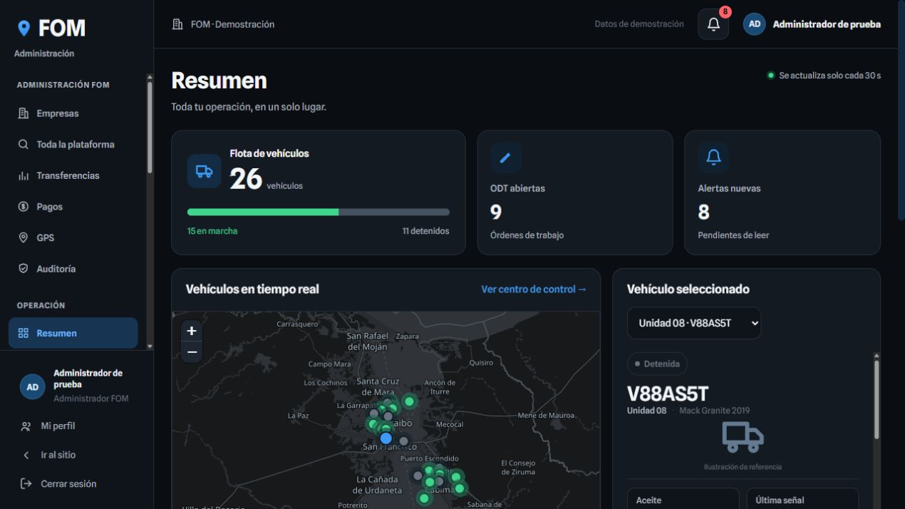

LA OFICINA Y LA CARRETERA, CONECTADAS
Tu flota conectada.
Tu operación, bajo control.
Una misma plataforma. Donde estés.

FOM DRIVER
Todo ese control.
Ahora en tu mano.
De la vista completa de tu flota
a la unidad que acompaña a tu conductor.
Tu unidad Inspecciones Tu perfil
↓Desliza para llevar la operación contigo
Concepto de movimiento · Datos de ejemplo